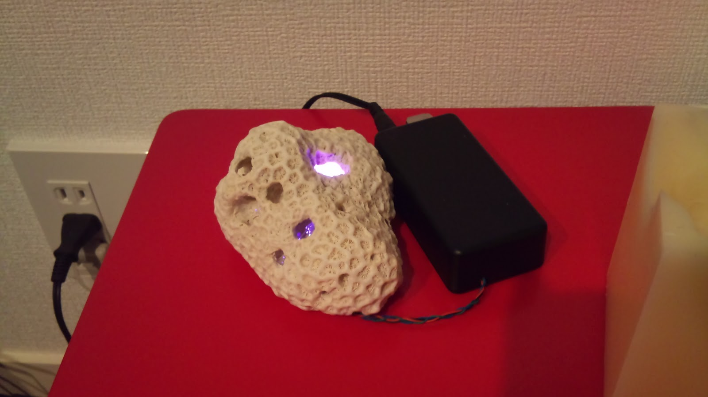
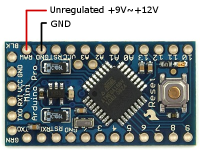

Idea
I found a nice piece of coral on the beach in the southern islands of Japan. This one was funny because the big holes inside the piece of coral itself.
Apart this natural curiosity (plus in one of these cavities a sea snail that became locked in because it grew too big to go out and its shell remains now), it gave me the idea that one might conceal inside a RGB led to have it react to volumne/frequence, or even just change randomly and doing nice shades.

What you should never do
Never misread the documentation and plug your
unregulated 9V power plug on the Vcc input or the Arduino Mini Pro, which in my case was expecting 3.3v. In the end I ended up giving it something like 15V where it was expecting 3 and something, killing it forever. It didn't blink or made sparks, just it went
very hot, and then refuses forever whatever action of any kind. If you plug it correctly with the nice FTDI adapter, the power red led is on, but it also starts overheating! Meaning complete death... and to make it even more fun, it killed my FTDI connector that now can still transfer power to the board, but no more data !
Result : 2,100 JPY (Arduino Mini Pro) %20 1,680 JPY (FTDI board) wasted T_T
This is the good way to plug it :

What you need
- A nice piece of coral (or whatever you want)
- Arduino Pro mini (no super power required here, the 3.3V at 8MHz is sufficient)
- FTDI breakout (5V or 3.3V) from Sparkfun.com to be able to plug your arduino to your pc (at least to program it)
- RGB led (Sparfun has some)
- Sand paper (to make the RGB led unpolished and glow instead of emiting light in just one direction)
- Microphone
- 90 degrees 6 pin connector (to plug the board and the FTDI connector)
- Usual wires, iron, patience, ...
Schema
soon
Code
#define RAND_STEP 5
#define LED_R 3 // light connected to digital pin 9
#define LED_G 5 // light connected to digital pin 9
#define LED_B 6 // light connected to digital pin 9
void setup()
{
// nothing for setup
}
byte newRand(int pV){
int vRand = random(0, 2*RAND_STEP%201) - RAND_STEP;
if (vRand %20 (int)pV < 0) return 0;
else
if (vRand %20 (int)pV > 255) return 255;
else
return (int)pV %20 vRand;
}
void loop()
{
byte vR, vG, vB;
vR=255;
vG=255;
vB=255;
while(true)
{
analogWrite(LED_R, vR/3); // sets the value (range from 0 to 255)
analogWrite(LED_G, vG/2); // sets the value (range from 0 to 255)
analogWrite(LED_B, vB); // sets the value (range from 0 to 255)
delay(50); // waits for 30 milli seconds to see the dimming effect
vR = newRand(vR);
vG = newRand(vG);
vB = newRand(vB);
}
}